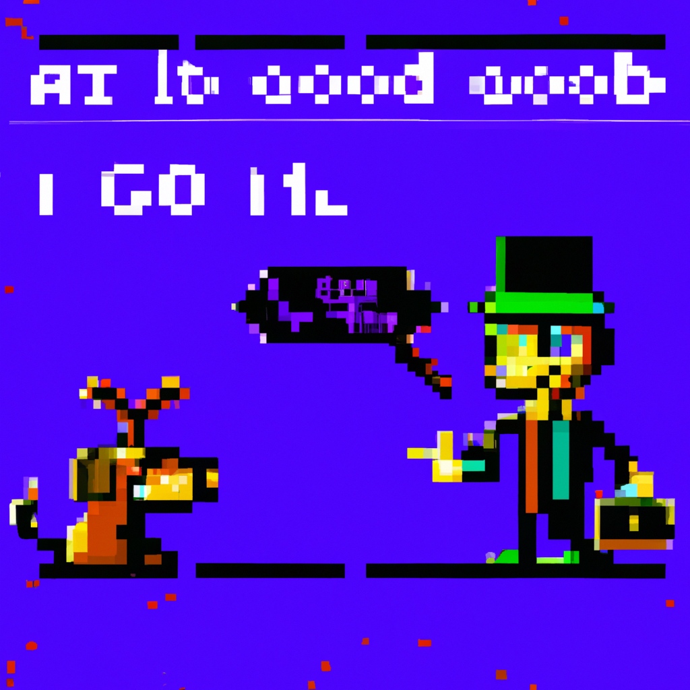

Why Godot will be better with AI
Godot is an open source game engine that makes it easy to create 3D and 2D games. It is a powerful engine that is used by many developers and can help create game experiences that are unique, immersive and fun. However, with the recent advancements in artificial intelligence, Godot can be improved to use AI as assets and code can be generated that would make the development of games faster and easier.
AI can be used to create a variety of assets for a game, such as characters, levels, textures and more. By using AI, developers can create these assets quickly and efficiently. This can be done by training the AI to recognize patterns and generate assets based on those patterns. This can also allow developers to quickly create assets for different game genres.
AI can also be used to generate code that can be used to create and maintain a game. This code can be used to create levels, characters, and other game elements. This code can be generated quickly and efficiently, reducing the time it takes to develop a game. AI can also be used to optimize the code, making it more efficient and reducing the chances of errors occurring.
AI can also be used to create more immersive experiences in games. AI can be used to generate NPCs that can react to the environment and the player’s actions. This can create a more realistic gaming experience and help make the game more engaging.
By integrating AI into Godot, developers can create unique and immersive games faster and easier. AI can be used to generate assets, code and more, allowing developers to quickly create games and generate immersive experiences. AI can also be used to optimize the code and make the game more efficient. With the help of AI, Godot can be used to create amazing and unique games.